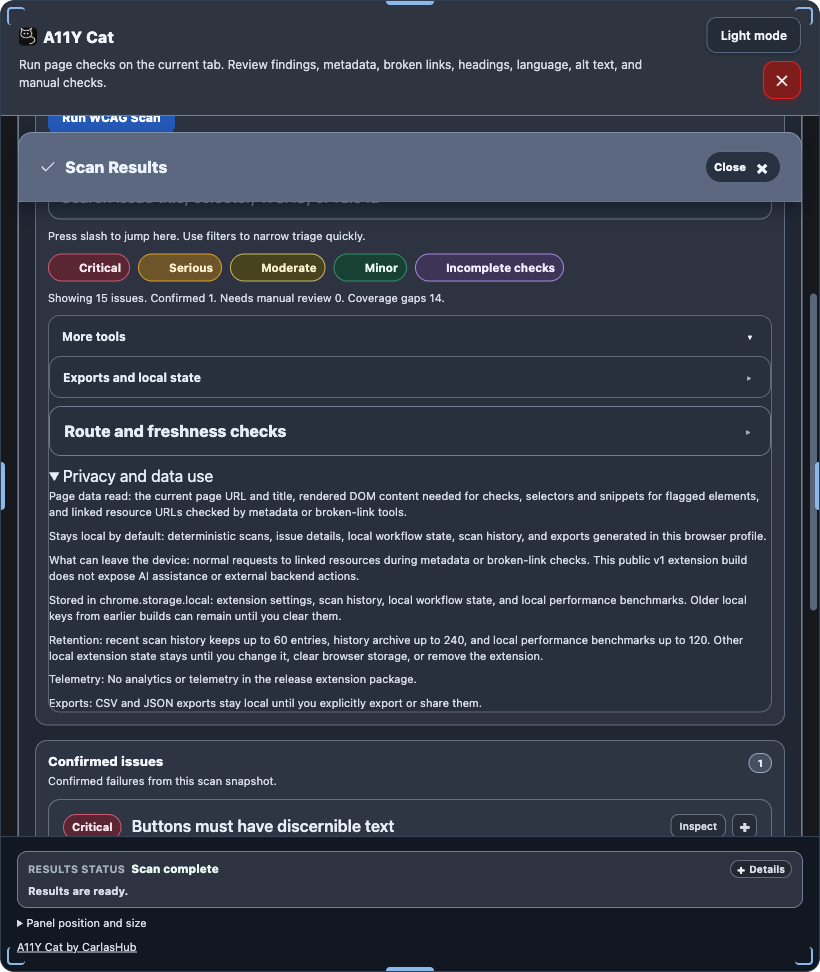

The public extension processes page content locally in the browser. It stores local workflow data on the current machine and exposes exports only when the user chooses to create them.
Public package boundary: no developer database is used by the public release package, no developer server is required, and no analytics or telemetry endpoint is included.

The extension exposes privacy and local-data disclosure in the panel instead of hiding storage behaviour.
What is stored locally
History and comparison
Scan analysis snapshots needed for local history and previous-scan comparison.
Workflow state
Issue annotations, workflow status, local notes, and Screen Reader Review state.
Settings and support data
Saved settings, panel geometry, performance benchmarks, and spelling allowlist entries.
Current local storage keys
a11yCatExtSettingsV1
a11yCatScanHistoryV1
a11yCatScanHistoryArchiveV1
a11yCatWorkflowStateV1
a11yCatVirtualSrReviewStateV1
a11yCatPerfBenchmarksV1
a11yCatSpellingAllowlistV1
What exports may include
page URL and sometimes page title
selectors and evidence snippets
rule ids, WCAG references, and classification fields
local notes and workflow state
diagnostics and limitation records
virtual Screen Reader Review logs and QA notes where those exports are used
Request behaviour and limits
The Broken Links review can make same-origin HEAD or GET requests to verify destinations.
Cross-origin links are not fetched automatically; they remain unverified.
Local processing does not mean every restricted or protected page context is fully inspectable.
How users clear data
Scan Results → Privacy and data use → Clear all local extension data
Removing the extension clears extension-managed storage.
Export caution: exports remain local until the user chooses to copy or share them, but they can contain sensitive snippets, selectors, URLs, titles, notes, and diagnostics.